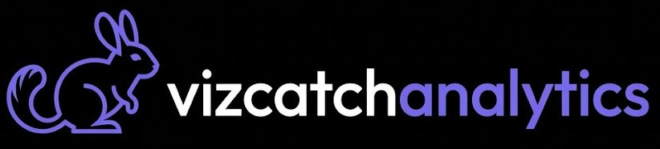

Este documento es una plantilla maestra diseñada siguiendo estrictamente el Brand Guidelines de Vizcatch Analytics. Optimizada para exportación a PDF, mantiene el contraste del Dark Mode y los acentos en Neón Purple.
| Canal | Usuarios | Sesiones | % Rebote |
|---|---|---|---|
| Búsqueda Orgánica | 45,000 | 52,100 | 42% |
| Directo | 22,300 | 28,400 | 35% |
| Redes Sociales | 15,800 | 18,200 | 55% |